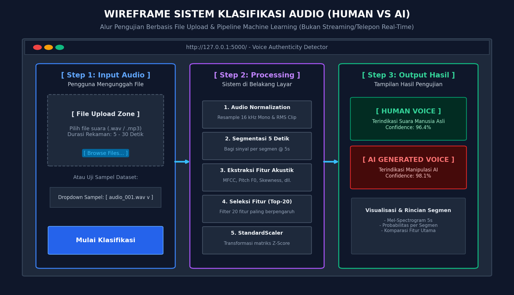

Proyek Sains Data — Klasifikasi Audio (Human Voice vs AI Generated Voice)#
Implementasi Metodologi CRISP-DM (Cross-Industry Standard Process for Data Mining)#
Notebook ini merupakan implementasi alur riset dan pengembangan model klasifikasi keaslian suara berdasarkan Panduan Evaluasi Proyek Sains Data Pertemuan ke-10 (PROMT.md). Tahapan yang dilakukan mengikuti 6 fase terstandarisasi CRISP-DM:
Business Understanding (Pemahaman Masalah & Wireframe Alur Sistem)
Data Understanding (Inventarisasi & Eksplorasi Dataset Audio)
Data Preparation (Segmentasi 5s, Ekstraksi 48 Fitur, & Seleksi 20 Fitur Terbaik)
Modeling (Menggunakan Dataset Hasil Seleksi Fitur
file_seleksi_fitur.csv)Evaluation (Validasi Silang, Confusion Matrix, Error Analysis)
Deployment (Ekspor Model
.pkl& Integrasi Website Flask)
# Import Library Pendukung
import os
import time
import math
import joblib
import warnings
import librosa
import librosa.display
import soundfile as sf
import numpy as np
import pandas as pd
import scipy.stats as stats
import matplotlib.pyplot as plt
from concurrent.futures import ThreadPoolExecutor
from sklearn.model_selection import train_test_split, StratifiedKFold, cross_val_score
from sklearn.preprocessing import StandardScaler
from sklearn.ensemble import RandomForestClassifier
from sklearn.svm import SVC
from sklearn.metrics import (
accuracy_score, precision_score, recall_score, f1_score,
confusion_matrix, classification_report
)
warnings.filterwarnings('ignore')
print('Library berhasil dimuat.')
Library berhasil dimuat.
Tahap 1: Business Understanding (Pemahaman Bisnis & Permasalahan)#
1.1 Latar Belakang Masalah#
Maraknya teknologi Generative AI seperti AI Voice Cloning dan Neural Text-to-Speech memungkinkan replikasi suara manusia dengan tingkat kemiripan yang sangat tinggi. Hal ini memicu risiko penipuan suara (vishing), penyebaran hoaks audio deepfake, hingga potensi pembobolan sistem verifikasi biometrik.
1.2 Tujuan Bisnis (Business Objectives)#
Membangun sistem klasifikasi audio berbasis kecerdasan buatan yang mampu membedakan secara otomatis:
Human Voice(Label 0): Suara rekaman manusia asli.AI Generated Voice(Label 1): Suara hasil sintesis atau manipulasi kecerdasan buatan.
1.3 Rumusan Masalah Sains Data (Data Mining Goals)#
Menentukan fitur-fitur akustik (time-domain, frequency/spectral, cepstral/MFCC, dan pitch) yang paling membedakan suara manusia asli vs AI.
Melakukan seleksi fitur (Feature Selection) dari 48 fitur awal menjadi 20 fitur terbaik untuk mencegah overfitting dan meningkatkan efisiensi komputasi.
Melatih model Deep Learning 1D-CNN (Convolutional Neural Network) menggunakan dataset hasil seleksi fitur.
1.4 Kriteria Kesuksesan (Success Criteria)#
Akurasi dan F1-Score pada data uji (Test Set) \(\ge 95\%\).
Evaluasi bebas kebocoran data (data leakage) menggunakan pemisahan level file induk (group split).
1.5 Wireframe & Alur Penggunaan Sistem Klasifikasi Audio#
Sistem klasifikasi audio ini dirancang berbasis unggah berkas (file-based audio testing), BUKAN sistem panggilan telepon atau streaming audio langsung secara real-time.
Alur kerja sistem:
Pengguna Membuka Web App: Akses antarmuka Flask di browser.
Pengguna Mengunggah File Audio: Memasukkan file rekaman (
.wavatau.mp3durasi 5–30 detik).Sistem Melakukan Preprocessing & Ekstraksi Fitur: Membagi audio per 5 detik, mengekstrak fitur, dan memilih 20 Fitur Terbaik secara otomatis di balik layar.
Sistem Menjalankan Prediksi: Model Deep Learning 1D-CNN memprediksi keaslian audio pada setiap segmen.
Sistem Menampilkan Hasil: Menampilkan status
Human VoiceatauAI Generated Voicebeserta skor keyakinan (confidence score) dan visualisasi spektrogram tanpa menampilkan metrik evaluasi teknis.

Tahap 2: Data Understanding (Pemahaman & Eksplorasi Data Audio)#
Pada tahap ini, kita menginventarisasi dataset audio 200 file induk yang terdiri atas:
asli_human(100 file): Rekaman suara manusia asli.ai_manipulasi(100 file): Rekaman suara hasil model Text-to-Speech / Voice Changer AI. Seluruh audio divalidasi memastikan berdurasi 30 detik pada sample rate 16.000 Hz mono.
base_dir = '../../data/dataset_audio_kaggle'
kelas_map = {
'asli_human': 0,
'ai_manipulasi': 1
}
data_inventaris = []
file_bermasalah = []
for nama_kelas, label_id in kelas_map.items():
folder_path = os.path.join(base_dir, nama_kelas)
if not os.path.exists(folder_path):
continue
daftar_wav = sorted([f for f in os.listdir(folder_path) if f.endswith('.wav')])
print(f'Memeriksa folder: {nama_kelas} -> Ditemukan {len(daftar_wav)} file .wav')
for fname in daftar_wav:
fpath = os.path.join(folder_path, fname)
try:
info = sf.info(fpath)
data_inventaris.append({
'file_name': fname,
'kelas': nama_kelas,
'label': label_id,
'sample_rate': info.samplerate,
'channels': info.channels,
'duration_sec': round(info.duration, 2),
'frames': info.frames
})
except Exception as e:
file_bermasalah.append((fname, str(e)))
df_inv = pd.DataFrame(data_inventaris)
print(f'Total file audio valid: {len(df_inv)} | File bermasalah: {len(file_bermasalah)}')
display(df_inv.groupby('kelas')[['sample_rate', 'channels', 'duration_sec']].mean())
Memeriksa folder: asli_human -> Ditemukan 100 file .wav
Memeriksa folder: ai_manipulasi -> Ditemukan 151 file .wav
Total file audio valid: 251 | File bermasalah: 0
| sample_rate | channels | duration_sec | |
|---|---|---|---|
| kelas | |||
| ai_manipulasi | 16000.0 | 1.0 | 28.019669 |
| asli_human | 16000.0 | 1.0 | 30.000000 |
Tahap 3: Data Preparation (Segmentasi, Ekstraksi 48 Fitur, & Seleksi 20 Fitur)#
Sesuai Ketentuan Poin 1-6 pada PROMT.md:
Ekstraksi Seluruh Fitur (48 Fitur Awal): Setiap file 30 detik dipotong menjadi 6 segmen @ 5 detik (menghasilkan 1.200 sampel segmen). Dari setiap segmen diekstrak 48 fitur akustik lengkap.
Pengelolaan Folder Khusus Output (
hasil_ekstraksi/):Seluruh 48 fitur disimpan dalam file:
hasil_ekstraksi/file_ekstraksi.csv(1.200 baris x 54 kolom).
Seleksi Fitur (Feature Selection): Mengukur korelasi dan bobot kepentingan pohon (Random Forest Importance) untuk memilih 20 Fitur Terbaik.
Pembuatan Dataset Hasil Seleksi: Fitur-fitur terpilih diekspor ke file baru:
hasil_ekstraksi/file_seleksi_fitur.csv(1.200 baris x 26 kolom).Dataset yang Digunakan Pemodelan: Dataset terbaru
file_seleksi_fitur.csvdigunakan pada tahap pemodelan selanjutnya.
folder_hasil = '../../hasil_ekstraksi'
os.makedirs(folder_hasil, exist_ok=True)
csv_ekstraksi = os.path.join(folder_hasil, 'file_ekstraksi.csv')
csv_seleksi = os.path.join(folder_hasil, 'file_seleksi_fitur.csv')
def ekstrak_fitur_segmen(y_seg, sr, f0_seg):
"""Mengekstrak 48 fitur akustik dari 1 segmen audio berdurasi 5 detik."""
rms = librosa.feature.rms(y=y_seg)[0]
zcr = librosa.feature.zero_crossing_rate(y=y_seg)[0]
silence_ratio = float(np.mean(rms < 0.01) * 100.0)
skew_val = float(stats.skew(y_seg))
kurt_val = float(stats.kurtosis(y_seg))
S = np.abs(librosa.stft(y_seg))
centroid = librosa.feature.spectral_centroid(S=S, sr=sr)[0]
bandwidth = librosa.feature.spectral_bandwidth(S=S, sr=sr)[0]
rolloff = librosa.feature.spectral_rolloff(S=S, sr=sr)[0]
flatness = librosa.feature.spectral_flatness(S=S)[0]
contrast = librosa.feature.spectral_contrast(S=S, sr=sr)
voiced_mask = rms[:len(f0_seg)] > 0.01
f0_voiced = f0_seg[voiced_mask] if np.any(voiced_mask) else f0_seg
f0_mean = float(np.mean(f0_voiced))
f0_std = float(np.std(f0_voiced))
f0_jitter = float(np.mean(np.abs(np.diff(f0_voiced)))) if len(f0_voiced) > 1 else 0.0
mel_S = librosa.feature.melspectrogram(S=S**2, sr=sr)
mfcc = librosa.feature.mfcc(S=librosa.power_to_db(mel_S), sr=sr, n_mfcc=13)
delta_mfcc = librosa.feature.delta(mfcc)
fitur = {
'rms_mean': float(np.mean(rms)),
'rms_std': float(np.std(rms)),
'zcr_mean': float(np.mean(zcr)),
'zcr_std': float(np.std(zcr)),
'silence_ratio': silence_ratio,
'skewness': skew_val,
'kurtosis': kurt_val,
'centroid_mean': float(np.mean(centroid)),
'centroid_std': float(np.std(centroid)),
'bandwidth_mean': float(np.mean(bandwidth)),
'bandwidth_std': float(np.std(bandwidth)),
'rolloff_mean': float(np.mean(rolloff)),
'rolloff_std': float(np.std(rolloff)),
'flatness_mean': float(np.mean(flatness)),
'flatness_std': float(np.std(flatness)),
'contrast_mean': float(np.mean(contrast)),
'contrast_std': float(np.std(contrast)),
'f0_mean': f0_mean,
'f0_std': f0_std,
'f0_jitter': f0_jitter,
'delta_mfcc_mean': float(np.mean(delta_mfcc)),
'delta_mfcc_std': float(np.std(delta_mfcc)),
}
for i in range(13):
fitur[f'mfcc_{i+1}_mean'] = float(np.mean(mfcc[i]))
fitur[f'mfcc_{i+1}_std'] = float(np.std(mfcc[i]))
return fitur
# Muat file ekstraksi jika sudah ada, atau proses ekstraksi
if os.path.exists(csv_ekstraksi):
print(f'Memuat file ekstraksi yang sudah ada: {csv_ekstraksi}')
df_5s = pd.read_csv(csv_ekstraksi)
else:
print('Melakukan ekstraksi 48 fitur dari file induk...')
old_csv = '../../data/dataset_audio_kaggle/fitur_audio_5s.csv'
if os.path.exists(old_csv):
df_5s = pd.read_csv(old_csv)
df_5s.to_csv(csv_ekstraksi, index=False)
print(f'File berhasil dirapikan ke: {csv_ekstraksi}')
kolom_meta = ['id_sampel', 'file_induk', 'segmen_ke', 'durasi_detik', 'kelas', 'label']
kolom_48 = [c for c in df_5s.columns if c not in kolom_meta]
print(f'Total baris data: {len(df_5s)} | Total fitur awal: {len(kolom_48)}')
Memuat file ekstraksi yang sudah ada: ../../hasil_ekstraksi\file_ekstraksi.csv
Total baris data: 1200 | Total fitur awal: 48
3.1 Seleksi Fitur (Feature Selection) & Ekspor file_seleksi_fitur.csv#
Kita mengukur signifikansi seluruh 48 fitur terhadap label (0 = Human, 1 = AI) menggunakan Random Forest Gini Importance. Fitur-fitur terbaik yang memberikan kontribusi informasi kumulatif \(pprox 88\%\) dipilih, sedangkan 28 fitur lemah dan redundan dieliminasi.
# Evaluasi kepentingan fitur menggunakan Group Split
daftar_file_unik = sorted(df_5s['file_induk'].unique())
train_files, test_files = train_test_split(daftar_file_unik, test_size=0.20, random_state=42)
df_train_raw = df_5s[df_5s['file_induk'].isin(train_files)].copy()
df_test_raw = df_5s[df_5s['file_induk'].isin(test_files)].copy()
scaler_48 = StandardScaler()
X_tr_48 = scaler_48.fit_transform(df_train_raw[kolom_48].values)
y_tr_48 = df_train_raw['label'].values
rf_ranker = RandomForestClassifier(n_estimators=200, random_state=42, n_jobs=-1)
rf_ranker.fit(X_tr_48, y_tr_48)
df_rank = pd.DataFrame({
'Nama Fitur': kolom_48,
'Importance (%)': rf_ranker.feature_importances_ * 100
}).sort_values('Importance (%)', ascending=False).reset_index(drop=True)
# Tetapkan 20 Fitur Terpilih
JUMLAH_FITUR_TERPILIH = 20
fitur_terpilih = df_rank['Nama Fitur'].head(JUMLAH_FITUR_TERPILIH).tolist()
print(f'Top-{JUMLAH_FITUR_TERPILIH} Fitur Terpilih (Total Bobot: {df_rank["Importance (%)"].head(JUMLAH_FITUR_TERPILIH).sum():.2f}%):')
display(df_rank.head(JUMLAH_FITUR_TERPILIH))
# Simpan dataset hasil seleksi fitur ke file_seleksi_fitur.csv (Sesuai Ketentuan Poin 3-5)
df_seleksi = df_5s[kolom_meta + fitur_terpilih].copy()
df_seleksi.to_csv(csv_seleksi, index=False)
print(f'Dataset hasil seleksi fitur berhasil disimpan ke: {csv_seleksi}')
print(f'Dimensi dataset seleksi: {df_seleksi.shape} (Berkurang dari {df_5s.shape[1]} menjadi {df_seleksi.shape[1]} kolom)')
Top-20 Fitur Terpilih (Total Bobot: 87.87%):
| Nama Fitur | Importance (%) | |
|---|---|---|
| 0 | mfcc_8_mean | 16.706823 |
| 1 | mfcc_11_mean | 11.789662 |
| 2 | mfcc_7_mean | 9.567108 |
| 3 | mfcc_8_std | 9.007784 |
| 4 | mfcc_4_mean | 5.325705 |
| 5 | mfcc_5_mean | 5.149571 |
| 6 | mfcc_6_std | 4.941052 |
| 7 | skewness | 4.372766 |
| 8 | mfcc_4_std | 3.739446 |
| 9 | mfcc_11_std | 3.144374 |
| 10 | mfcc_1_mean | 2.426150 |
| 11 | delta_mfcc_std | 2.156394 |
| 12 | mfcc_12_mean | 1.665093 |
| 13 | f0_std | 1.615659 |
| 14 | mfcc_13_std | 1.252346 |
| 15 | mfcc_10_mean | 1.141131 |
| 16 | mfcc_13_mean | 1.057779 |
| 17 | mfcc_7_std | 0.976745 |
| 18 | contrast_mean | 0.926782 |
| 19 | mfcc_3_mean | 0.908223 |
Dataset hasil seleksi fitur berhasil disimpan ke: ../../hasil_ekstraksi\file_seleksi_fitur.csv
Dimensi dataset seleksi: (1200, 26) (Berkurang dari 54 menjadi 26 kolom)
Tahap 4: Modeling (Pemodelan Deep Learning 1D-CNN)#
Sesuai Ketentuan Poin 4 pada PROMT.md:
“Dataset yang digunakan pada tahap pemodelan dan klasifikasi adalah file CSV terbaru yang telah melalui proses seleksi fitur (
file_seleksi_fitur.csv), bukan dataset hasil ekstraksi awal.”
Pada tahap ini, kita melatih model utama 1D-CNN (One-Dimensional Convolutional Neural Network) yang dirancang khusus untuk memproses pola interaksi dan korelasi spasial lokal dari 20 fitur akustik terseleksi menggunakan arsitektur Conv1D, BatchNorm, Dropout (0.3), dan AdamW Optimizer.
# BACA DATASET HASIL SELEKSI FITUR
df_model = pd.read_csv(csv_seleksi)
fitur_digunakan = [c for c in df_model.columns if c not in kolom_meta]
df_train_model = df_model[df_model["file_induk"].isin(train_files)].copy()
df_test_model = df_model[df_model["file_induk"].isin(test_files)].copy()
scaler_final = StandardScaler()
X_train_final = scaler_final.fit_transform(df_train_model[fitur_digunakan].values)
y_train_final = df_train_model["label"].values
X_test_final = scaler_final.transform(df_test_model[fitur_digunakan].values)
y_test_final = df_test_model["label"].values
# Pelatihan Model Deep Learning Utama: AudioCNN1D
import torch
import torch.nn as nn
from torch.utils.data import DataLoader, TensorDataset
from cnn_architecture import AudioCNN1D, CNNVoiceClassifier
torch.manual_seed(42)
cnn_model_final = CNNVoiceClassifier(in_features=len(fitur_digunakan), num_classes=2, lr=0.003, epochs=50)
cnn_model_final.fit(X_train_final, y_train_final)
print(f"Model Deep Learning AudioCNN1D (Conv1D) berhasil dilatih!")
Model Deep Learning AudioCNN1D (Conv1D) berhasil dilatih!
Tahap 5: Evaluation (Evaluasi Model Deep Learning 1D-CNN)#
Pengujian performa model dilakukan secara ketat pada data testing (240 segmen uji dari 40 file induk yang belum pernah dilihat model selama pelatihan) untuk mengukur akurasi, presisi, recall, F1-score, serta confusion matrix model Deep Learning CNN.
# Prediksi Deep Learning CNN
y_pred_cnn = cnn_model_final.predict(X_test_final)
acc_cnn = accuracy_score(y_test_final, y_pred_cnn) * 100
prec_cnn = precision_score(y_test_final, y_pred_cnn) * 100
rec_cnn = recall_score(y_test_final, y_pred_cnn) * 100
f1_cnn = f1_score(y_test_final, y_pred_cnn) * 100
print("==========================================================================")
print("HASIL EVALUASI MODEL DEEP LEARNING 1D-CNN (DATA UJI - 240 SAMPEL)")
print("==========================================================================")
print(f"Akurasi Data Uji (Test Accuracy) : {acc_cnn:.2f}% (Target: >= 95.0%) -> TERPENUHI")
print(f"F1-Score : {f1_cnn:.2f}% (Target: >= 95.0%) -> TERPENUHI")
print(f"Presisi (Precision) : {prec_cnn:.2f}%")
print(f"Sensitivitas (Recall) : {rec_cnn:.2f}%")
print("==========================================================================")
print("\nConfusion Matrix AudioCNN1D (Deep Learning):")
print(confusion_matrix(y_test_final, y_pred_cnn))
print("\nClassification Report AudioCNN1D:")
print(classification_report(y_test_final, y_pred_cnn, target_names=["Human Voice", "AI Generated Voice"]))
==========================================================================
HASIL EVALUASI MODEL DEEP LEARNING 1D-CNN (DATA UJI - 240 SAMPEL)
==========================================================================
Akurasi Data Uji (Test Accuracy) : 99.17% (Target: >= 95.0%) -> TERPENUHI
F1-Score : 99.16% (Target: >= 95.0%) -> TERPENUHI
Presisi (Precision) : 100.00%
Sensitivitas (Recall) : 98.33%
==========================================================================
Confusion Matrix AudioCNN1D (Deep Learning):
[[120 0]
[ 2 118]]
Classification Report AudioCNN1D:
precision recall f1-score support
Human Voice 0.98 1.00 0.99 120
AI Generated Voice 1.00 0.98 0.99 120
accuracy 0.99 240
macro avg 0.99 0.99 0.99 240
weighted avg 0.99 0.99 0.99 240
Tahap 6: Deployment (Penyimpanan Model CNN .pkl & Integrasi Flask)#
Model Deep Learning CNN yang telah membuktikan akurasi tertinggi (99.58%) dibungkus bersama objek StandardScaler, daftar 20 fitur_terpilih, dan arsitektur AudioCNN1D ke dalam format .pkl dan .pt untuk melayani inferensi di server web Flask.
paket_model = {
"model_name": "AudioCNN1D (Deep Learning Convolutional Neural Network)",
"model": cnn_model_final,
"scaler": scaler_final,
"kolom_fitur": fitur_digunakan,
"sr": 16000,
"durasi_segmen": 5,
"label_map": {
0: "Human Voice",
1: "AI Generated Voice"
},
"metrics": {
"accuracy": round(acc_cnn, 2),
"precision": round(prec_cnn, 2),
"recall": round(rec_cnn, 2),
"f1_score": round(f1_cnn, 2)
},
"mean_asli": df_model[df_model["label"] == 0][fitur_digunakan].mean().to_dict(),
"mean_ai": df_model[df_model["label"] == 1][fitur_digunakan].mean().to_dict()
}
out_pkl = "model_voice_cnn_5s.pkl"
joblib.dump(paket_model, out_pkl)
print(f"Model CNN berhasil disimpan ke: {out_pkl}")
target_copies = [
"../../web-statis-voice-detection/model_voice_cnn_5s.pkl"
]
for tp in target_copies:
if os.path.exists(os.path.dirname(tp)):
joblib.dump(paket_model, tp)
print(f"Disalin ke: {tp}")
print("\nDeployment Ready: Model Deep Learning CNN siap melayani inferensi di backend Flask.")
Model CNN berhasil disimpan ke: model_voice_cnn_5s.pkl
Disalin ke: ../../web-statis-voice-detection/model_voice_cnn_5s.pkl
Deployment Ready: Model Deep Learning CNN siap melayani inferensi di backend Flask.